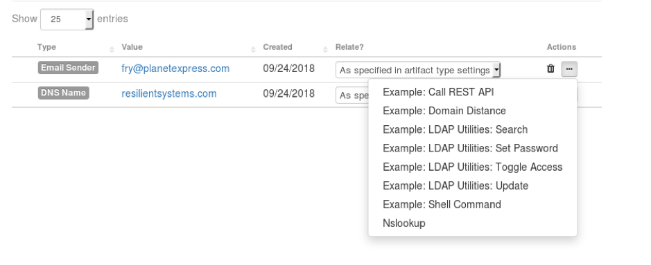
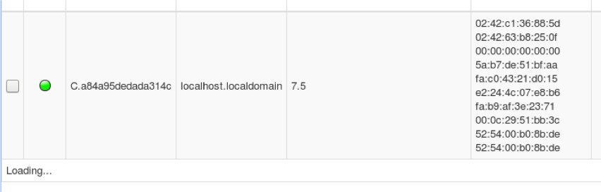

Technical Workshop Guide: resilient-circuits¶
This guide was originally supplied with its own OVA that was setup with all the prerequisites. Use this as a reference only
Prerequisites¶
Setup a Resilient OVA running in VirtualBox
Register your RHEL account:
For IBM Internal Users: Subscribe RHEL device using subscription-manager
Login with IBM Intranet Credentials
Open
ibm-rhsm.shfileSSH into RHEL device
Copy contents of
ibm-rhsm.shto clipboard and save to RHEL device using vimGive script permissions
$ chmod u=rwx ibm-rhsm.sh
Run script
$ ./ibm-rhsm.sh
You will be asked to enter a
usernameandpasswordTo get these details you must register with the LTC Infrastructure Site
Install Docker
sudo yum install -y yum-utils device-mapper-persistent-data lvm2 sudo subscription-manager repos --enable=rhel-7-server-extras-rpms sudo yum install -y container-selinux sudo yum-config-manager \ --add-repo https://download.docker.com/linux/centos/docker-ce.repo sudo yum install -y docker-ce sudo systemctl start docker sudo usermod -aG docker resadmin sudo docker ps -a
You must logout and login to use docker without sudo
Configure PSQL
Open the PSQL connection
sudo -u postgres -i psql postgres
Paste the following command then hit enter
CREATE TABLE systems ( name text, sys_ipaddr text, sys_type text, sys_os text, sys_os_version text, sys_owner_email text );
Paste the following command then hit enter
INSERT INTO systems (name, sys_ipaddr, sys_type, sys_os, sys_os_version, sys_owner_email) VALUES ('win1234', '10.10.10.10', 'laptop', 'windows', '10', 'fry@planetexpress.com'), ('win2345', '10.10.10.11', 'server', 'windows server', '2016', 'professor@planetexpress.com');
Test success with:
select * from systems;
Install LDAP:
sudo yum install -y openldap-clients docker run \ --restart always \ --privileged -d \ -p 389:389 \ rroemhild/test-openldap
Install GRR
mkdir ~/grr-docker sudo docker run \ --name grr-server -v /home/resadmin/grr-docker/db:/var/grr-datastore \ -v ~/grr-docker/logs:/var/log \ -e EXTERNAL_HOSTNAME="localhost" \ -e ADMIN_PASSWORD="resilient" \ --ulimit nofile=1048576:1048576 \ -p 0.0.0.0:8000:8000 -p 0.0.0.0:8080:8080 \ -d grrdocker/grr:v3.2.3.2 grr
Test Docker
docker ps -a
Reference¶
Docs: https://developer.ibm.com/security/resilient/start/
App Exchange: https://exchange.xforce.ibmcloud.com/hub/Resilient
Step 1: Check which Python Version is installed¶
Open Terminal
Check Python version:
$ python --version
Output should be:
Python 2.7.15
Step 2: Make sure Resilient License is Valid¶
Open Terminal
Check valid license is configured:
$ sudo resutil license
NOTE: your sudo password is
resilientIf it does not exist or is expired, source a valid license and run:
$ sudo license-import
Paste your valid license and hit Enter:
-----BEGIN LICENSE----- xxx -----END LICENSE-----
Restart the Resilient Service:
$ sudo service resilient restart
Step 3: Install Resilient Circuits¶
Open Terminal

Install resilient-circuits using pip:
$ pip install resilient-circuits
NOTE: you will need a connection to the Internet to install. We have pre-downloaded all necessary packages for this tutorial: To install without an Internet Connection:
$ pip install --no-index --find-links=/home/resadmin/Desktop/local_pip resilient-circuits

Step 4: Configure Resilient Circuits¶
Resilient Circuits configurations are maintained in the app.config file¶
Open terminal
Auto generate the app.config file:
$ resilient-circuits config -c
This creates
/home/resadmin/.resilient/app.configOpen this file in VS Code:
$ code /home/resadmin/.resilient/app.config
Replace the contents with these configuration settings:
[resilient] host=localhost port=443 email=integrations@example.com password=ResDemo123 org=Dev componentsdir=/home/resadmin/.resilient/components logdir=/home/resadmin/.resilient logfile=app.log loglevel=INFO cafile=false
Save by pressing CTRL+S
Open Terminal
Create the components directory:
$ mkdir /home/resadmin/.resilient/components
Step 5: Create User Accounts¶
Open Terminal
Create two users:
An Admin User:
$ sudo resutil newuser -createorg -org "Dev" -email "resadmin@example.com" -first "Res" -last "Admin" -password "ResDemo123"
NOTE: your sudo password is
resilientAn Integrations Engine User:
$ sudo resutil newuser -org "Dev" -email "integrations@example.com" -first "Orchestration" -last "Engine" -password "ResDemo123"
Step 6: Run Resilient Circuits¶
Open Terminal
Run resilient-circuits:
$ resilient-circuits run
You should get this output if
resilient-circuitsis running successfully:
Step 7: Install FN Utilities¶
Stop
resilient-circuitsby pressing CTRL+CDownload the package from https://exchange.xforce.ibmcloud.com/hub/extension/2b6699ac8a3976b67dfbddee26dbe3a5
You may need to register for an X-Force Exchange Account
Open Terminal
Change to your Downloads folder:
$ cd /home/resadmin/Downloads/
NOTE: you will need a connection to the Internet to download and install. We have pre-downloaded all necessary packages for this tutorial: To install without an Internet Connection:
$ pip install --no-index --find-links=/home/resadmin/Desktop/local_pip /home/resadmin/Desktop/local_appx/fn_utilities-1.0.3.tar.gz
Skip to importing the configurations
Unzip the package:
$ unzip fn_utilities-x.x.x.zip
Install FN Utilities using pip:
$ pip install fn_utilities-x.x.x.tar.gz
Import configurations:
$ resilient-circuits config -u
Import customizations:
$ resilient-circuits customize -y
Start Resilient Circuits:
$ resilient-circuits run
Step 8: Testing FN Utilities¶
Go to Resilient UI
Go to your Desktop and open FireFox
Go to:
https://localhost
Login:
Email:
resadmin@example.comPassword:
ResDemo123
Create an Incident
Name:
Integrations Demo
Add an Artifact to that Incident
Type:
DNS NameValue:
resilientsystems.com
Click the Take Action Button and run the Example: Shell Command Workflow on that Artifact:

Check your terminal:

See the results in the Notes Tab of your Resilient Incident:
Can also see DEBUG Information in the Action Status which is located just under the navigation bar on the right-hand side:


You may find that
tracerouteis not installed on your VM. Ctrl+C quit resilient-circuits and then install with:$ sudo yum install -y traceroute
Restart
resilient-circuits runafter
Step 9: Create new Custom Workflow that uses our Shell Command Function¶
In the Resilient UI, go to Customization Settings, under your username on the right-hand side of the navigation bar
Click the Workflows Tab
Create a new Workflow
Name: nslookup
Object Type: Artifact

Add an End Event (the dark black circle icon) to the canvas
Add the function Utilities: Shell Command to the Workflow Canvas by clicking on the function icon and selecting Utilities: Shell Command from the dropdown menu
Edit the Pre-Process Script:
inputs.shell_command = "nslookup" inputs.shell_remote = False inputs.shell_param1 = artifact.value
Edit the Post-Process Script:
note_text = u"Command succeeded: {}\n{}".format(results.commandline, results.stdout) incident.addNote(helper.createPlainText(note_text))
Close the Function Editor and drag/scroll the function into view on the canvas
Using the connectors (the black arrow icon), join the start event to the function and then the function to the end event
Click Save & Close
Step 10: Create new Custom Rule that runs our Workflow¶
Click the Rules Tab
Create a new Menu Item Rule:
Display Name: Nslookup
Object Type: Artifact
Workflows: nslookup
Click Save & Close
Step 11: Run our Custom Workflow¶
Go to your Incident
Click the Artifacts Tab
Run
nslookupworkflow on theresilientsystems.comArtifactSee the logs in the terminal and results in the Notes Tab
Step 12: Start Docker¶
Open Terminal
Stop
resilient-circuitsby pressing CTRL+CStart docker:
$ sudo systemctl start docker
Check docker is running:
$ docker ps -a
Step 13: Ensure OpenLDAP is Configured and Running¶
Run:
$ ldapwhoami -vvv -h localhost -p 389 -D "cn=Philip J. Fry,ou=people,dc=planetexpress,dc=com" -x -w "fry"
Step 14: Install the LDAP Utilities Function¶
This is very similar to install the previous
fn_utilitiesfunctionDownload the package from https://exchange.xforce.ibmcloud.com/hub/extension/72b8204066d3b290b68bae2eeb1942cd
Open Terminal
Change to your Downloads folder:
$ cd /home/resadmin/Downloads/
NOTE: you will need a connection to the Internet to download and install. We have pre-downloaded all necessary packages for this tutorial: To install without an Internet Connection:
$ pip install --no-index --find-links=/home/resadmin/Desktop/local_pip /home/resadmin/Desktop/local_appx/fn_ldap_utilities-1.0.0.tar.gz
Skip to importing the configurations
Unzip the package:
$ unzip fn_ldap_utilities-x.x.x.zip
Install FN LDAP Utilities using pip:
$ pip install fn_ldap_utilities-x.x.x.tar.gz
Import configurations:
$ resilient-circuits config -u
Import customizations:
$ resilient-circuits customize
NOTE: Only type Y to the
fn_ldap_utilitiespromptsStart resilient-circuits:
$ resilient-circuits run
Step 15: Configure LDAP Utilities¶
Open
/home/resadmin/.resilient/app.configin VS Code:$ code /home/resadmin/.resilient/app.config
Update the settings under
[fn_ldap_utilities]:[fn_ldap_utilities] ldap_server=127.0.0.1 ldap_port=389 ldap_use_ssl=False ldap_auth=SIMPLE ldap_user_dn=cn=admin,dc=planetexpress,dc=com ldap_password=GoodNewsEveryone ldap_is_active_directory=False ldap_connect_timeout=10
Update Search Base in LDAP Search Function:
Customization Settings > Workflows > Example: LDAP Utilities: Search
Click Search Function
Edit ldap_search_base in the Pre-Processing Script
inputs.ldap_search_base = "dc=planetexpress,dc=com" inputs.ldap_search_filter = "(&(mail=%ldap_param%))" inputs.ldap_search_param = artifact.value
Click Save & Close
Step 16: Run LDAP Search Function¶
Go to your Incident
Add an Artifact to that Incident
Type:
Email SenderValue:
fry@planetexpress.com
Click the Take Action Button and run the Example: LDAP Utilities: Search 
Check your Terminal Output
Step 17: View LDAP Search Results in Resilient UI¶
Go to Customization Settings -> Layouts -> Manage Tabs
Add a New Tab:
Incident Tabs > Manage Tabs > + Add Tab
Tab Text: Users & Systems
Tab Visible: Yes
Click Add
Now drag the LDAP Query results Datatable into the Users & Systems Tab:
Save the layout and go back to your incident
Go to the new Users & Systems tab, you will see the LDAP lookup result:
Add a new Email Sender Artifact of
professor@planetexpress.comRun the LDAP Search Function again
Check the result
Step 18: Install & Configure the CMDB Function¶
Stop
resilient-circuitsby pressing CTRL+CDownload the package from https://exchange.xforce.ibmcloud.com/hub/extension/a51eb932122b9f71062e9ed8705f35f0
Open Terminal
Change to your Downloads folder:
$ cd /home/resadmin/Downloads/
NOTE: you will need a connection to the Internet to download and install. We have pre-downloaded all necessary packages for this tutorial: To install without an Internet Connection:
$ pip install --no-index --find-links=/home/resadmin/Desktop/local_pip /home/resadmin/Desktop/local_appx/fn_odbc_query-1.0.0.tar.gz
Skip to importing the configurations
Unzip the package:
$ unzip fn_odbc_query-x.x.x.zip
Install FN ODBC using pip:
$ pip install fn_odbc_query-x.x.x.tar.gz
Import configurations:
$ resilient-circuits config -u
Import customizations:
$ resilient-circuits customize
NOTE: Only type Y to the
fn_odbc_querypromptsOpen the
app.configfile in VS CodeReplace the
sql_connection_stringvalue with below:[fn_odbc_query] sql_connection_string=Driver={PostgreSQL};Server=localhost;Port=5555;Database=postgres;Uid=postgres;Pwd=resilient;
Test that our PSQL Database is working:
psql -h localhost -p 5555 -U postgres -W postgres -c "select * from systems;"
Start resilient-circuits:
$ resilient-circuits run
In the Resilient UI, add a new Workflow
Name:
CMDB QueryObject Type:
Artifact
Insert the
fn_odbc_queryfunction in to the canvas, add an End Event and connect the workflow all together using the connectorsClick the function’s edit icon and update the function input:
sql_querywith the following query:select name as sql_column_1, sys_ipaddr as sql_column_2, sys_type as sql_column_3, sys_os_version as sql_column_4, sys_owner_email as sql_column_5 from systems where name = ?
Update Pre-Processing Script:
inputs.sql_condition_value1 = artifact.value
Update Post-Processing Script:
# Globals # This list contains Resilient data table api field names. # Exclude fist two columns 'sql_artifact_value' and 'sql_timestamp' from this list. # Modify this list acording to your Resilent data table fields. RESILENT_DATATABLE_COLUMN_NAMES_LIST = [ "sql_column_1", "sql_column_2", "sql_column_3", "sql_column_4", "sql_column_5"] # Processing from java.util import Date if results.entries is not None: for entry in results.entries: row = incident.addRow("sql_query_results_dt") row.sql_artifact_value = artifact.value row.sql_timestamp = Date() for item in RESILENT_DATATABLE_COLUMN_NAMES_LIST: if entry[item] is not None: try: row[item] = entry[item] except IndexError: row[item] = ""
Click Save & Close
Click the Rules tab and create a new Menu Item Rule:
Name:
CMDB LookupObject Type:
ArtifactWorkflows:
CMDB Query
Click Save & Close
Go to your Incident and add a new Artifact:
Type:
System NameValue:
win1234
Take Action with the CMDB Lookup Workflow on the Artifact and check the terminal output
Once again you will need add the SQL Results Table to your Users and Systems Tab

Step 19: Setup GRR¶
Restart the GRR Docker Container
$ docker ps -a $ docker restart <CONTAINER-ID>
First we need to link your GRR server to your RHEL Desktop
Open and new tab in FireFox
Go to:
localhost:8000Enter username and password:
Username:
adminPassword:
resilient
Click Manage Binaries
Download
linux/installers / grr_3.2.3.2_i386.rpmand save to your DownloadsOpen Terminal
Change to your Downloads folder:
$ cd /home/resadmin/Downloads/
Install the package:
$ sudo rpm -ivh grr_3.2.3.2_amd64.rpm
In GRR, click the magnifying glass on the search box
You will see your agent is running 
NOTE: If the light is yellow, the GRR Client is not running. To restart the GRR Client use:
$ sudo systemctl restart grr
Step 20: Add GRR Message Destination in Resilient UI¶
Open Resilient UI
Customization Settings > Message Destination Tab
Add a new Message Destination
Type:
QueueName:
fn_grrProgrammatic Name:
fn_grrExpect Acknowledgement:
YesUsers:
Orchestration Engine (integrations@example.com)
Click Create
Step 20: Add New GRR Function in Resilient UI¶
Go to the Functions Tab
Create a New Function:
Name:
GRR SearchAPI Name:
grr_searchMessage Destination:
fn_grrDescription:
A function to search for GRR Agent
Create two Inputs Fields:
Click Add Field:
Type:
TextAPI Access Name:
grr_search_valueRequirement:
Always
Click Create
Add another field by clicking Add Field
Type:
SelectAPI Access Name:
grr_search_typeRequirement:
AlwaysAdd/Edit Values:
ip user hostBlank Option:
No
Click Create
Drag the two inputs from the right panel into the Inputs panel
Click Save & Close
Step 21: Add New GRR Workflow in Resilient UI¶
Go to the Workflows Tab
Click New Workflow
Name:
Example: GRR Search by IPAPI Name:
example_grr_search_by_ipDescription:
An example Workflow using the GRR Search Function to get a GRR Agents information using their IP AddressType:
Artifact
Add the GRR Search Function to the Workflow Canvas and join to Start and End Events:

Make sure the input
grr_search_typeis set to ip in the Function Inputs Tab, under the Workflow CanvasEdit the Pre-Process Script:
inputs.grr_search_value = artifact.value
Edit the Post-Process Script:
if results.success: for entry in results["agent_data"]: note_text = """<b>system_product_name:</b> {0} </br><b>system_uuid:</b> {1} </br><b>system_manufacturer:</b> {2} </br><b>release:</b> {3} </br><b>machine:</b> {4} </br><b>version:</b> {5}""".format(entry["hardware_info"]["system_product_name"], entry["hardware_info"]["system_uuid"], entry["hardware_info"]["system_manufacturer"], entry["os_info"]["release"], entry["os_info"]["machine"], entry["os_info"]["version"]) incident.addNote(helper.createRichText(note_text)) else: note_text = "{} system not found in GRR".format(search_value) incident.addNote(helper.createPlainText(note_text))
Click Save & Close
Step 22: Add New GRR Rule in Resilient UI¶
Go to the Rules Tab
Click New Rule and create a new Menu Item Rule:
Display Name:
GRR Search by IPObject Type:
ArtifactWorkflows:
Example: GRR Search by IP
NOTE: This could be an
Automatic Ruletoo, however for testing we will use aMenu Item Rule
Step 23: Add Python Code for GRR Function¶
Firstly we need to export our Resilient UI Customizations we just created
In the Resilient UI go to Administrator Settings > Organization > Export and click Export
Save the file to your Downloads Directory
Open Terminal
Change directory to your components directory
$ cd /home/resadmin/.resilient/components
Generate the resilient code:
$ resilient-circuits codegen -f grr_search
NOTE: if you see this error: You forgot to Export from the Resilient UI. You will need to Export and then run the
codegencommand again.Open the file in VS Code:
$ code grr_search.py

Step 24: Develop GRR Script¶
Whilst we can develop a function in place, its often easier to develop as a Python Script then integrate that script into a Resilient Function. This means testing is quicker and if we already have an example script its quicker to get started.
Look at the documentation for GRR
There is a Python API Client: https://github.com/google/grr/tree/master/api_client/python
Follow the installation instructions to install the API Client:
$ pip install grr-api-client $ pip install future
Create a new file in the VSCode. Call it grr_test.py and save it in the home directory
First we need to import the GRR Library, then need to define our connection params. Then using the docs we can see we need to create a
grrapi object:from grr_api_client import api grr_server="http://localhost:8000" grr_user="admin" grr_pwd="resilient" verify_cert=False grrapi = api.InitHttp(api_endpoint=grr_server, auth=(grr_user, grr_pwd),verify=verify_cert)
Again, using the documentation, create a search:
The format is
SearchClients(ip:10.10.10.10)
grr_search_value = "127.0.0.1" grr_search_type = "ip" search_result = grrapi.SearchClients("{}:{}".format(grr_search_type,grr_search_value))
Now add in a for loop to print the results:
for client in search_result: print (client.client_id)
Code should look like:
Now run the script. You can do this within VS Code
Right-Click the file and click run python file in terminal:
Check the output. If you see a print out of the client_id then the script ran successfully:
The test script is complete
Step 25: Convert the Test Script into a Resilient Function¶
Highlight and copy all of your test script
Open grr_search.py and paste the test script overwriting the
# PUT YOUR FUNCTION IMPLEMENTATION CODE HEREon line 24Ensure the code’s indentation is correct using tab
We need to tidy some things up:
Move the import to the top of the file
Remove the grr_search_value and search_type as these are already declared at the top as inputs to the function
Use StatusMessage instead of print statements
StatusMessages inform the user in the Resilient UI
Create the results dictionary by looping the search_results and generating the data to return to the appliance
Here is all the code:
# -*- coding: utf-8 -*- # pragma pylint: disable=unused-argument, no-self-use """Function implementation""" import logging from resilient_circuits import ResilientComponent, function, StatusMessage, FunctionResult, FunctionError from grr_api_client import api class FunctionComponent(ResilientComponent): """Component that implements Resilient function(s)""" def __init__(self, opts): """constructor provides access to the configuration options""" super(FunctionComponent, self).__init__(opts) self.options = opts.get("fn_grr", {}) @function("grr_search") def _grr_search_function(self, event, *args, **kwargs): """Function: A function to search for GRR Agent""" try: # Get the function parameters: grr_search_type = self.get_select_param(kwargs.get("grr_search_type")) # select, values: "ip", "user", "host" grr_search_value = kwargs.get("grr_search_value") # text log = logging.getLogger(__name__) log.info("grr_search_type: %s", grr_search_type) log.info("grr_search_value: %s", grr_search_value) # Set the connection parameters grr_server="http://localhost:8000" grr_user="admin" grr_pwd="resilient" verify_cert=False # Setup the connection grrapi = api.InitHttp(api_endpoint=grr_server, auth=(grr_user, grr_pwd),verify=verify_cert) # Inform the user yield StatusMessage("Starting search for {}".format(grr_search_value)) # Search the clients # Search Format: "ip:127.0.0.1" search_result = grrapi.SearchClients("{}:{}".format(grr_search_type,grr_search_value)) agent_data = [] success = True # Set success to False if no agents found if search_result == None: success = False # Loop the results and append some info the the agent_data list else: for agent in search_result: hardware_info = { "system_manufacturer": str(agent.data.hardware_info.system_manufacturer), "system_product_name": str(agent.data.hardware_info.system_product_name), "system_uuid": str(agent.data.hardware_info.system_uuid) } os_info = { "release": str(agent.data.os_info.release), "version": str(agent.data.os_info.version), "machine": str(agent.data.os_info.machine) } entry = { "agent_id": str(agent.client_id), "hardware_info": hardware_info, "os_info": os_info } agent_data.append(entry) # Create the results dictionary results = { "success": success, "grr_search_value": grr_search_value, "grr_search_type": grr_search_type, "agent_data": agent_data } # Some logging log.info("Sending results to Resilient Appliance") log.info(results) yield StatusMessage("Complete") # Send the results to the appliance yield FunctionResult(results) except Exception: yield FunctionError()
Save the file
Open Terminal
Start resilient-circuits
$ resilient-circuits run
Step 26: Run our new Custom Workflow¶
Add an Artifact to you test Incident
Type:
IP AddressValue:
127.0.0.1
Click the Take Action Button and run the GRR Search by IP Workflow on that Artifact:
Check the Notes Tab to see the results:
Step 27: Store Credentials in app.config file¶
Open
/home/resadmin/.resilient/app.configin VS CodeAppend these settings to the end of the file:
[fn_grr] grr_server=http://localhost:8000 grr_user=admin grr_pwd=resilient verify_cert=False
Update the function code to read from the
app.configfile:# Set the connection parameters grr_server=self.options["grr_server"] grr_user=self.options["grr_user"] grr_pwd=self.options["grr_pwd"] verify_cert=self.options["verify_cert"]
Stop
resilient-circuitsby pressing CTRL+CStart resilient-circuits:
$ resilient-circuits run
Run & Test the Workflow again
Step 28: Package your Message Destination, Function, Workflow and Rule¶
In the Resilient UI go to Administrator Settings > Organization > Export and click Export
Save the file to your Downloads Directory
Open Terminal
Stop
resilient-circuitsby pressing CTRL+CChange Directory to your Desktop
$ cd /home/resadmin/Desktop
Generate the Resilient Function Package:
$ resilient-circuits codegen -p fn_grr -m fn_grr --rule "GRR Search by IP"
Open the
fn_grrdirectory in VS Code:$ code fn_grr/
Replace the generated function code with our previously created function:
Open
~/.resilient/components/grr_search.pyin VS CodeSelect all and copy
Open
~/Desktop/fn_grr/components/grr_search.pySelect all and paste
Save the file
Add package dependencies to
fn_grr/setup.py:Also update your name, email and license type in the
setup.pyfile:Add default app.config settings to
fn_grr/util/config.py:# -*- coding: utf-8 -*- """Generate a default configuration-file section for fn_grr""" from __future__ import print_function def config_section_data(): """Produce the default configuration section for app.config, when called by `resilient-circuits config [-c|-u]` """ config_data = u"""[fn_grr] grr_server=127.0.0.1 grr_user=user grr_pwd=password #Can be True/False verify_cert=False """ return config_data
Comment out (#) the
componentsdirin yourapp.configfile and Save it#componentsdir=/home/resadmin/.resilient/componentsNOTE: We do this so any functions in that directory do not get loaded anymore
Open Terminal
Change Directory into the fn_grr directory:
$ cd /home/resadmin/Desktop/fn_grr
Package the Resilient Function:
$ python setup.py sdist
Install the package:
$ pip install dist/fn_grr-1.0.0.tar.gz
NOTE: We can check the package was installed by running:
$ resilient-circuits list
Start resilient-circuits:
$ resilient-circuits run
Run the Workflow again on the Artifact and test all works ok
[Optional] Step 30: Setup VS Code to Debug Resilient Functions¶
Stop
resilient-circuitsby pressing CTRL+CYou need to find the location of where resilient-circuits is installed:
$ pip show resilient-circuits
Copy the location and open VS Code
On the left-hand side, click the Debug icon:
Click the dropdown and click Add Configuration:
The
launch.jsonfile opensDuplicate the first configuration and rename it to: Resilient-Circuits
Set the program variable to the location of resilient-circuits on your machine
Note: you should append resilient_circuits/app.py to the result you got from
pip show resilient-circuitsaboveOpen
grr_search.pyin VS Code and add a breakpoint to line 87:yield StatusMessage("Complete"):Note: to add a breakpoint click the space to the left of the line number
Run resilient-circuits by pressing the green play button:
You will see resilient-circuits start in your Terminal within VS Code:
Now, back to the Resilient UI and run the Workflow again
Wait for the debugger to stop at the breakpoint